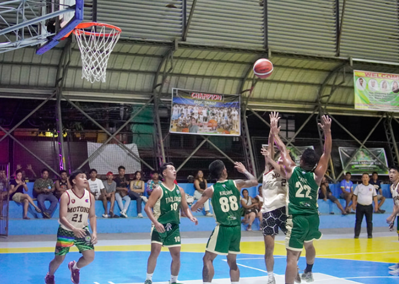
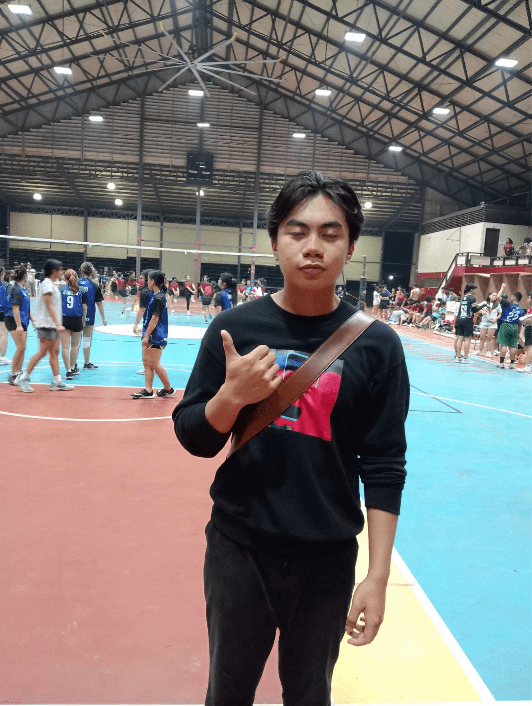
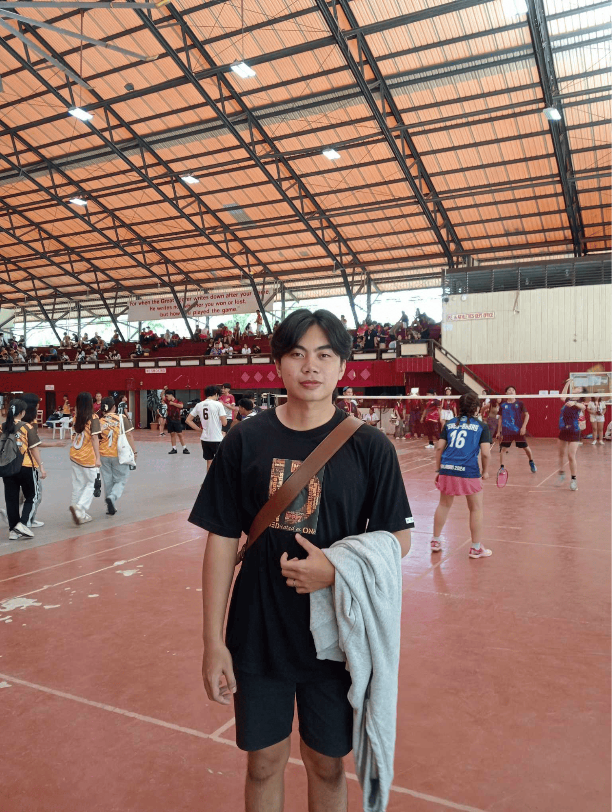
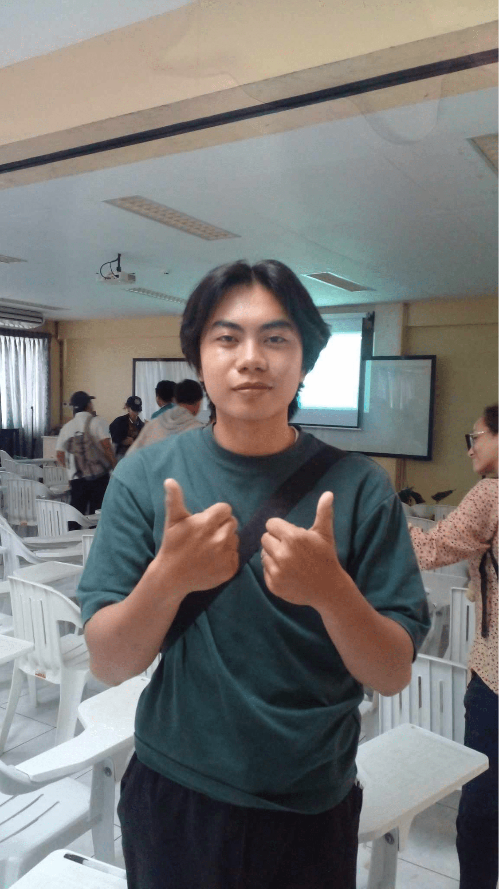
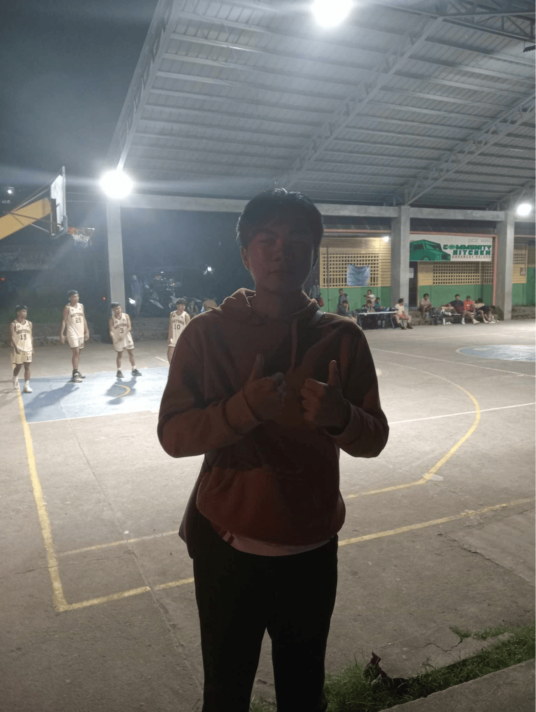
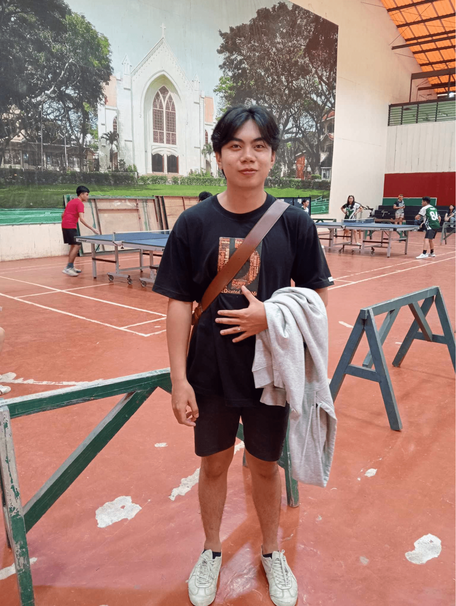
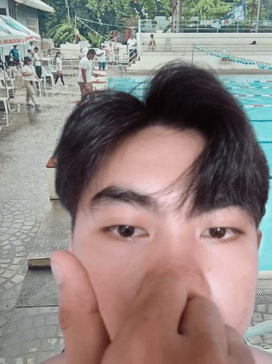
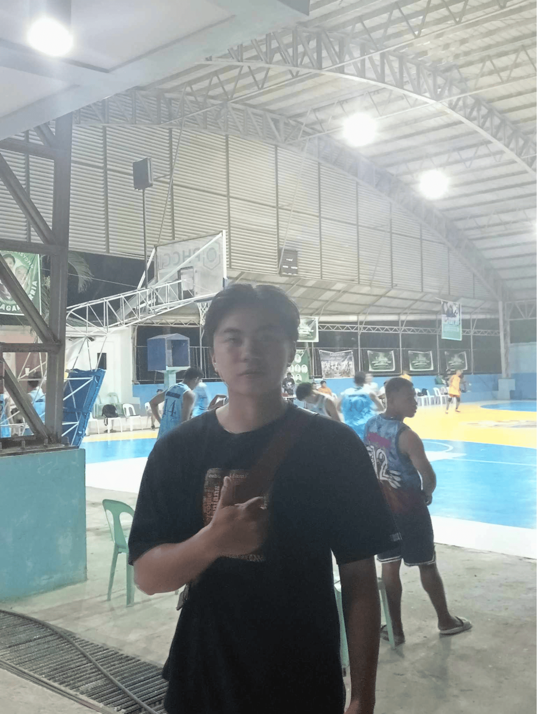
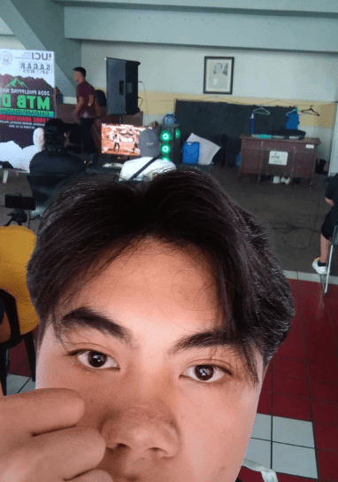

What?
On August 22, 2024, I participated in the Esports Leaderboards: Eliminations organized by the College of Computer Studies. This event was an intense yet exciting competition where participants showcased their skills in various online games. The eliminations stage was particularly competitive as everyone was determined to secure their spot on the leaderboard.
So What?
Participating in this event was a thrilling experience that combined teamwork, strategy, and quick decision-making. It was more than just a gaming competition—it was an opportunity to connect with fellow students who shared the same passion for esports. The eliminations helped me develop not only my technical gaming skills but also my ability to stay composed under pressure. The camaraderie and sportsmanship displayed by the participants made the experience even more rewarding.
Now What?
This event has deepened my interest in esports and inspired me to further hone my gaming skills(hehe) while maintaining a balance between leisure and academics. I also hope to participate in more esports events in the future, not just as a player but possibly as part of the organizing team to contribute to the growth of esports within our college.
Because of this activity, I am...
more enthusiastic about esports and more appreciative of how gaming can foster teamwork, strategy, and a sense of community among students.

What?
On October 8, 2024, I attended the basketball game between Barangay Motong and Barangay Taclobo as part of the Kagawad Jason Lagahit Cup tournament. The match was thrilling, with players from both teams showcasing their skills and teamwork. It was an exciting evening of friendly competition and camaraderie in our community.
So What?
A funny and unexpected moment of the night was realizing that some of my barangay friends were playing in the game! None of us had mentioned it to each other beforehand, so we all found it hilarious to meet there and share surprised smiles. It was a great reminder of how small and interconnected our community is, adding a layer of enjoyment to the event. Watching them play gave me a newfound appreciation for their athletic talent and dedication to representing our barangay.
Now What?
The experience inspired me to attend more community events and support local talent. Seeing how sports can bring people together, even as a spectator, made me feel more connected to my barangay. If there’s another tournament like this, I’ll be sure to cheer even louder for my friends—and maybe even bring along more supporters to amplify the fun atmosphere!
Because of this activity, I am...
more inspired to engage in my community’s activities, fostering stronger bonds and enjoying the sense of unity that comes from supporting each other.

What?
On October 29, 2024, I attended the Pasiklaban Table Tennis Tournament, organized by Silliman University Senior High School. As a spectator, I had the chance to watch some exciting matches between talented players. The energy in the room was contagious, and it was fascinating to see the high level of skill and strategy involved in the games.
So What?
Although I wasn’t competing, watching the players made me realize how important mental focus and quick reflexes are in sports. I found myself analyzing their techniques, learning from their movements, and feeling inspired to improve my own skills. The enthusiasm of the crowd and the sportsmanship displayed during the matches made it a fun and uplifting experience.
Now What?
This experience has motivated me to try my hand at table tennis again, with a renewed focus on technique and practice. I plan to continue attending more sports events like this, as they not only showcase great talent but also provide valuable lessons in teamwork, dedication, and perseverance. Watching the tournament reminded me of how sports can inspire and bring people together, and I’m excited to apply that energy to my own interests.
Because of this activity, I am...
More excited to get involved in sports events, whether as a participant or a spectator. It made me appreciate the value of friendly competition and the importance of practicing discipline and focus in both sports and life. I’m also eager to continue supporting my friends and teammates in their own sporting endeavors, knowing how encouraging it can be to have a supportive crowd cheering you on.
What?
On October 30, 2024, I attended the Pasiklaban Volleyball Tournament (Men's Division) organized by Silliman University Senior High School. Though I wasn’t a participant, it was an exciting experience to watch the matches unfold. The players demonstrated impressive skill, teamwork, and sportsmanship as they competed for the top spot. I cheered for the teams, and the energy from the crowd made the atmosphere even more electrifying.
So What?
Watching the tournament highlighted the importance of teamwork and strategy in sports. The players weren’t just focusing on individual performance; they communicated and worked together to win each point. It made me appreciate the coordination and effort it takes to succeed as a team. I also learned how high-energy sports like volleyball demand a combination of physical strength, quick reflexes, and mental toughness.
Now What?
This event inspired me to try being more active in sports and possibly explore volleyball as a hobby. The teamwork aspect made me realize how sports can foster collaboration and help build strong connections with others. I hope to participate in similar events in the future, either as a player or an active spectator, and continue supporting sports within our community.
Because of this activity, I am...
more interested in engaging in team sports and realizing how such activities build bonds and teamwork among individuals.

What?
On October 12, 2024, I participated in the Buglasan Swim Fest, an event organized by the Provincial Government of Negros Oriental. This event was part of the Buglasan Festival and included various swimming competitions. I had the chance to compete alongside many other swimmers, showcasing not only speed and technique but also the community spirit of the festival. The event was well-organized, and it was exciting to be part of such a lively and competitive atmosphere.
So What?
Participating in the swim fest taught me the value of pushing my limits and working on my swimming skills. It also reminded me of how events like this bring people together and celebrate both individual talents and collective efforts. It was inspiring to see swimmers of all ages and backgrounds compete, and it made me appreciate the hard work and dedication that goes into training for such events.
Now What?
This experience motivated me to continue improving my swimming skills and to be more involved in local sporting events. I realized that such events are a great way to stay active, meet new people, and promote health and wellness. If I get the opportunity, I would love to participate in future swim fests and other sports events to challenge myself further and contribute to the community’s sports culture.
Because of this activity, I am...
more committed to improving my swimming technique and excited to take part in more local sports events to stay active and support community initiatives.
What?
On October 29, 2024, I participated in the Pasiklaban Badminton tournament organized by Silliman University Senior High School. This event brought together a number of participants to showcase their skills in badminton, an exciting and fast-paced sport. I had the opportunity to compete and experience the thrill of the game, as well as witness some intense matches. The atmosphere was energetic and competitive, with each player giving their best on the court.
So What?
This event reinforced the importance of teamwork, focus, and perseverance. Even though badminton is often seen as an individual sport, it requires a lot of strategy, quick thinking, and stamina, which I was reminded of during my matches. Additionally, the friendly competition allowed me to learn from others, observe their techniques, and push myself to improve. The event also gave me a greater appreciation for how sports, like badminton, foster discipline and camaraderie.
Now What?
This experience has motivated me to dedicate more time to improving my badminton skills. I plan to practice regularly and participate in more sports events, as I now see how they can help improve both physical fitness and mental clarity. If I participate in future badminton tournaments, I aim to be more strategic in my plays and work on my agility and reflexes to perform better.
Because of this activity, I am...
more committed to practicing badminton regularly and enhancing my sportsmanship, both on and off the court. I now recognize the value of consistency and focus in both competitive sports and in everyday life.

What?
On October 8, 2024, I attended the Team Sagar Sports Tournament, which featured the Basketball Tournament Quarter Finals of the Kagawad Jason Lagahit Cup Inter-brgy 25 and Under Basketball Tournament. The event was a thrilling display of athleticism and competition, as teams from various barangays faced off in an exciting basketball match. The energy in the crowd was electrifying, with the players showing impressive skill and determination on the court.
So What?
Although I was just a spectator, watching the intensity and passion of the players inspired me to appreciate the hard work and teamwork that goes into sports events. One of the funniest and most unexpected parts of the experience was realizing that some of my barangay friends were playing in the tournament. It was amusing to see each other there, and we shared a good laugh about how we hadn’t expected to see familiar faces competing at such a high level. The event reminded me of the value of community involvement, sportsmanship, and how local events can bring people together, even when you least expect it.
Now What?
This experience has encouraged me to take a more active role in local sports events, whether as a participant or a supporter. It made me realize how fun it can be to cheer for friends and see people from my community showcase their talents. I also plan to follow future basketball tournaments and perhaps even join in myself if the opportunity arises.
Because of this activity, I am...
more motivated to be involved in future sports events and recognize the joy and camaraderie that comes from participating and supporting local competitions. It was a reminder of the bond shared in our community and the importance of staying connected through activities like these.

What?
On October 12, 2024, I attended the Buglasan E-Sports Tekken Tournament, organized by the Provincial Government of Negros Oriental, as a spectator. The tournament, which was part of the Buglasan Festival, brought together Tekken players from across the region to compete in a thrilling contest. It was exciting to watch talented players face off, each showcasing their skills in intense matches.
So What?
As a spectator, I gained a deeper appreciation for the complexity of competitive gaming. Watching the players in action made me realize the level of strategy and skill required to be successful in games like Tekken. I was impressed by how the players handled pressure, adapted their strategies during matches, and showcased their unique playstyles. The experience highlighted how E-Sports is not just about gaming but also about quick thinking, mental fortitude, and precision.
Now What?
Watching the tournament has inspired me to improve my own gaming skills, as I now see how important practice and strategy are in competitive play. I plan to continue watching E-Sports events to learn new techniques and better understand the dynamics of competitive gaming. Additionally, I’m interested in participating in future tournaments as I feel more motivated to challenge myself and improve my own gameplay.
Because of this activity, I am...
more inspired by the competitive gaming scene and excited to further explore the world of E-Sports. Watching the event was not only entertaining but also enlightening, and it has sparked my interest in both participating and possibly helping organize such events in the future.